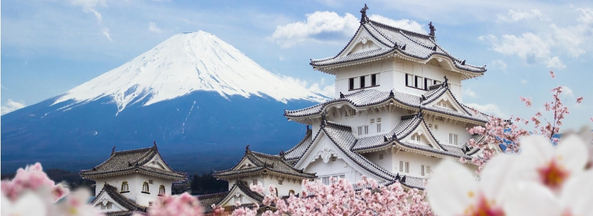
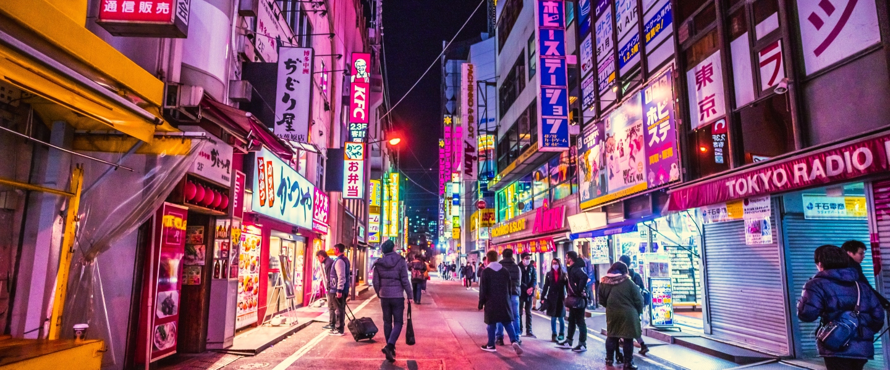

Pontos Turísticos na Cidade
Existem vários lugares icônicos dentro das cidades que são excelentes escolhas para se visitar e explorar.

Parques
Inaugurado nos anos 90, Sanrio Puroland é conhecido por ser o parque da Hello Kitty, porém o parque é cheio dos personagens da empresa como Aggretsuko, Bad-Badtz Maru, Gudetama, Rilakkuma. Há vários parques de diversão no Japão, há os internacionais como Universal e Disney, como também os exclusivos como os da Sanrio Puroland e um que será construído do Studios Ghibli.
Excursões
Viagens como passeios em pés de montanhas, até visitas em florestas com características únicas, como a Vila das Raposas.
Templos
Muitos com importância histórica ou religiosa para o Japão, são grandiosos e possuem uma das arquiteturas mais belas.